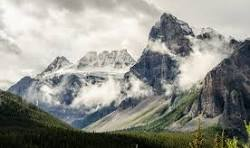
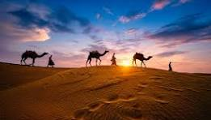
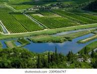

Exploring the Mountains
Exploring the mountains is an exhilarating experience that connects you with nature and provides a breathtaking escape from everyday life. Whether you are an avid hiker or a casual explorer, there's something uniquely inspiring about towering peaks, vast landscapes, and the fresh, crisp air found in the great outdoors.
Mountains offer diverse trails that cater to various skill levels, from gentle slopes perfect for family hikes to challenging ascents that require stamina and determination. Along the way, you can encounter stunning vistas, serene alpine meadows, and cascading waterfalls, each adding to the adventure's allure.
A Journey Through the Desert
The sun hung low on the horizon, casting a warm, golden glow over the endless expanse of the desert. As I stepped onto the fine grains of sand, the world around me transformed into a magical yet daunting landscape. The wind whispered secrets of ancient times, sending ripples across the dunes that appeared to stretch on forever, their peaks glimmering in the fading light..
the vast and fertile plains
Vast and fertile plains are extensive flat or gently rolling areas of land that typically have rich soil, making them ideal for agriculture. These plains often receive adequate rainfall and are characterized by the growth of grasses and crops. They can support a diverse range of flora and fauna and are crucial for food production in many regions around the world. Some well-known examples include the Great Plains in North America and the Pampas in Argentina.